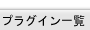
| 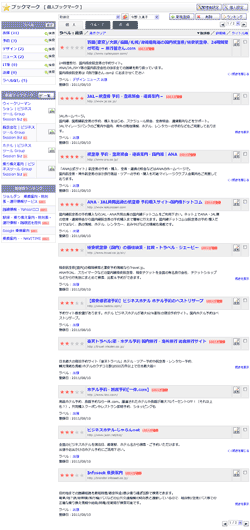 |
ブックマーク一覧 個人
・
グループ
・
共有
登録ブックマークを一覧表示します。 個人タブ、グループタブ、共有タブでそれぞれの表示切り替えができます。 |
|---|---|
| 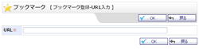 |
ブックマーク登録-URL入力
ブックマークに登録するURLを入力します。 |
| 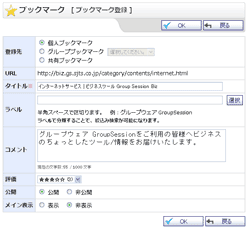 |
ブックマーク新規登録
・
編集
新規登録確認 ・ 編集確認 ブックマークの新規登録・編集を行います。 |
| 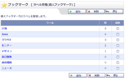 |
ラベル管理
ラベルの管理を行います。 |
| 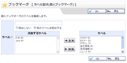 |
ラベル登録
・
編集
登録確認 ・ 編集確認 ラベルの登録・編集を行います。 |
| 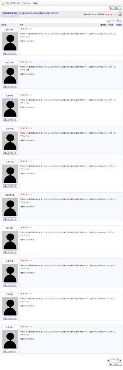 |
コメント・評価
コメント・評価の閲覧を行います。 |
| 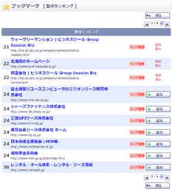 |
ランキング
ランキングの閲覧を行います。 |
| 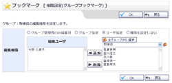 |
グループ権限設定
・
確認
グループブックマークの権限設定を行います。 |
| 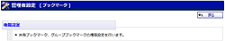 |
管理者設定メニュー
管理者グループに所属するユーザのみ使用可能なメニュー画面です。 |
 |
権限設定
・
確認
共有ブックマーク、グループブックマークの権限設定を行います。 |
 |
個人設定メニュー
ブックマークの個人設定を行う機能のメニュー画面です。 |
| 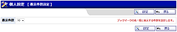 |
表示件数設定
ブックマーク一覧に表示する件数の設定を行います。 |
| 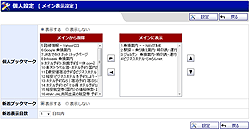 |
メイン表示設定
メイン画面に表示するブックマークの設定を行います。 |
| 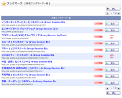 |
新着ブックマーク一覧
新着ブックマークの一覧画面です。 |